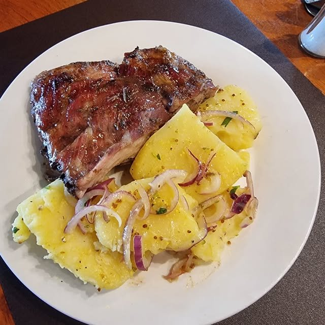
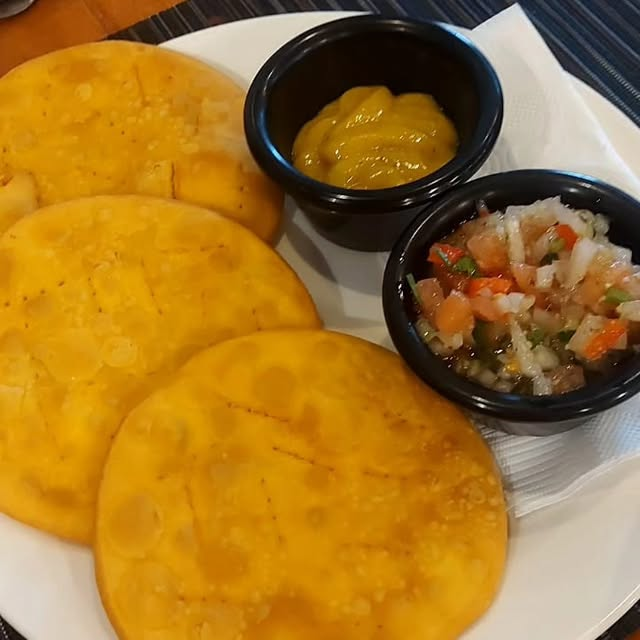
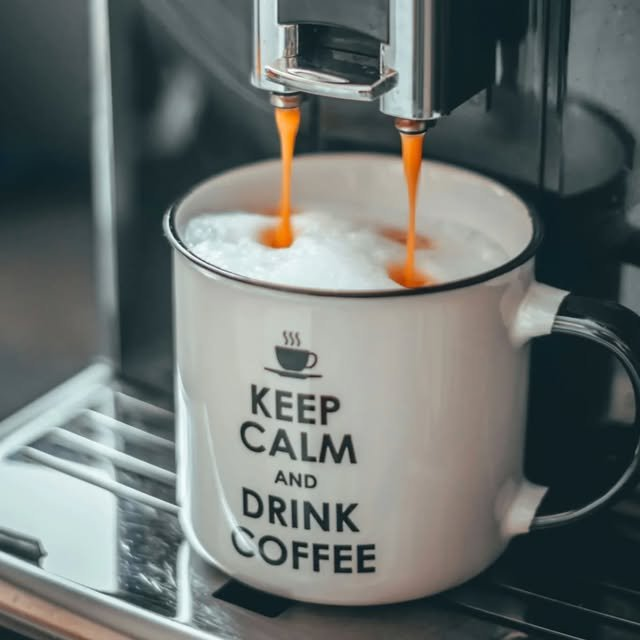

★★★★★
"Me encantó, es muy acogedor y atienden perfectamente. El café fue lo que más me gustó y la comida es muy casera. Volveré sin duda."

Menú del día, tortas y un café que hace que la gente vuelva sábado tras sábado — un rincón acogedor y tranquilo en Villaseca, Ñuñoa, hecho con la misma calidez de una cocina de casa.
Cafe Taurunum es una cafetería de barrio en Villaseca, Ñuñoa: menú del día, tortas hechas en casa y buen café, en un espacio tranquilo pensado para sentarse con calma. Las reseñas reales lo describen una y otra vez con las mismas palabras — acogedor, casero, contundente — y hay clientes que cuentan que vienen "todos los sábados" a almorzar porque la relación entre precio y calidad es de las mejores del barrio.
La atención es cercana y sin apuro: varias reseñas destacan un ambiente muy silencioso, ideal tanto para un almuerzo tranquilo como para una once con calma. No hay pretensiones ni menú extenso — lo que hay, está hecho con cariño y se nota.


"Me encantó, es muy acogedor y atienden perfectamente. El café fue lo que más me gustó y la comida es muy casera. Volveré sin duda."
"Hace meses que con mi pareja venimos todos los sábados a almorzar y es exquisito, comida casera muy contundente, con muy buen sabor y atendido por gente muy amable. Relación precio calidad lo mejor."
"Excelente sitio, el almuerzo y el postre, contundente, casero y muy rico."
Villaseca 27, Ñuñoa, Región Metropolitana
Lunes a viernes 9:00–20:00 · Sábado 10:00–17:00 · Domingo cerrado